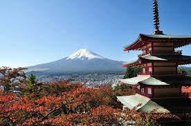

Monte Fuji - Uma maravilha de tirar o fôlego
O paraíso para quem procura aventura! Reconhecido em todo o mundo por oferecer a experiência mais emocionante do Japão, o Monte. Fuji é o melhor lugar para se visitar e definitivamente um dos lugares mais românticos do Japão. Embora a temporada oficial de escalada comece em julho e termine em setembro, você pode testemunhar a beleza à distância durante todo o ano. É um dos melhores lugares para visitar no Japão para jovens adultos. Escusado será dizer que este lugar deveria estar na sua lista!